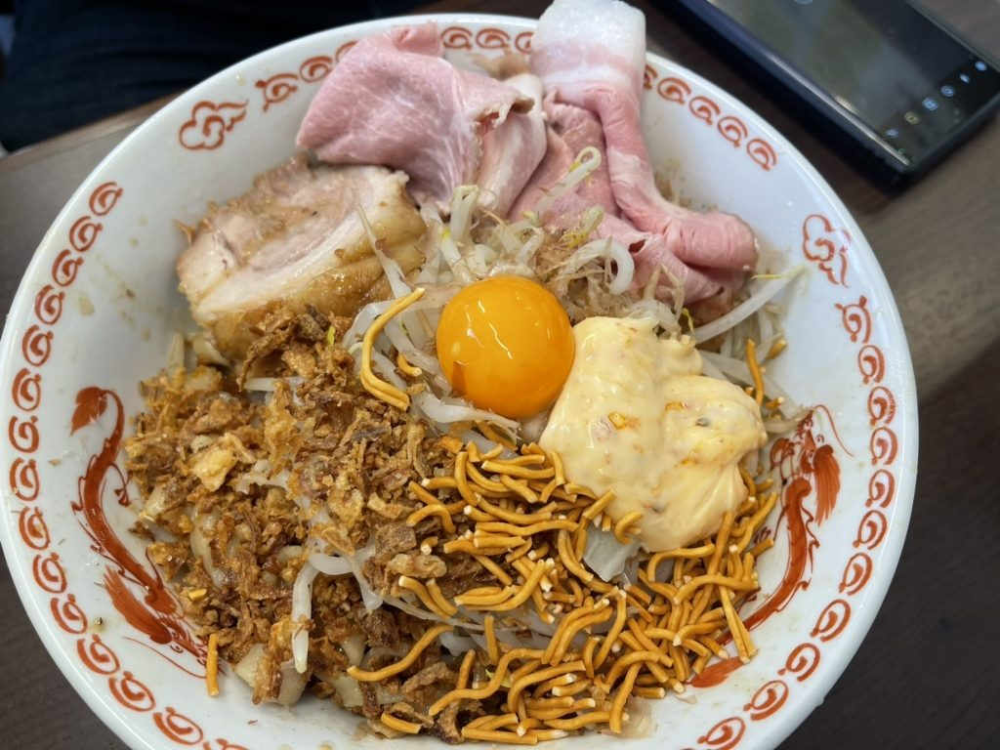
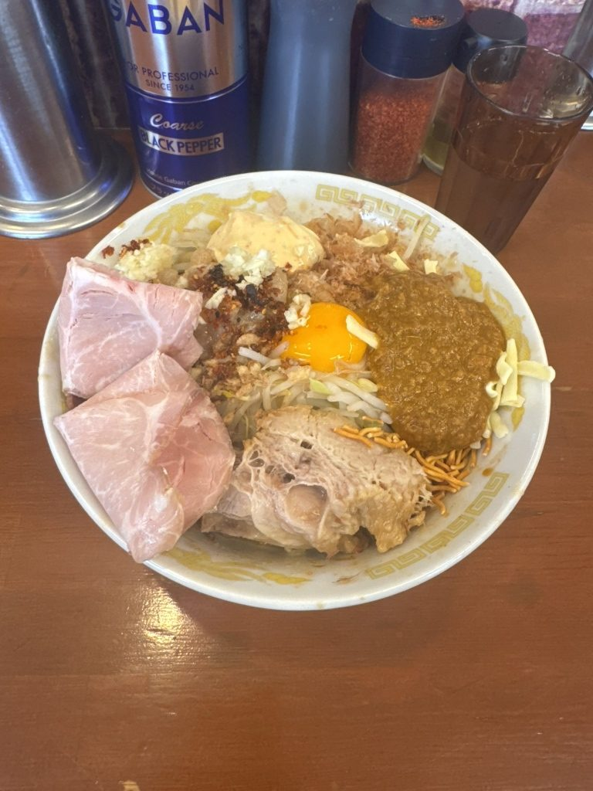
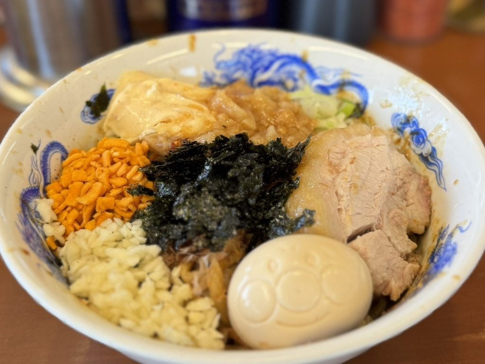
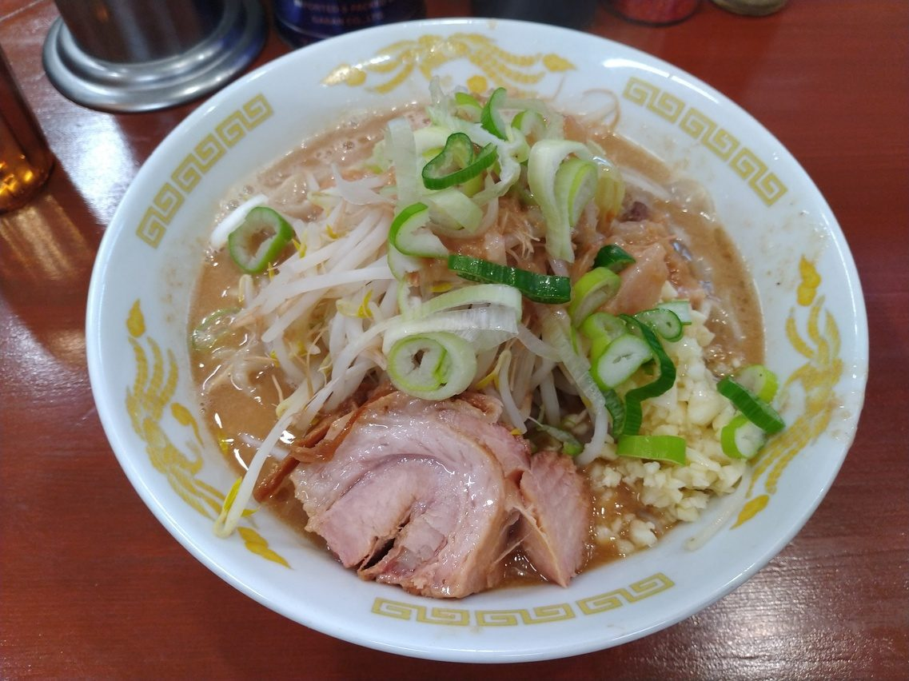
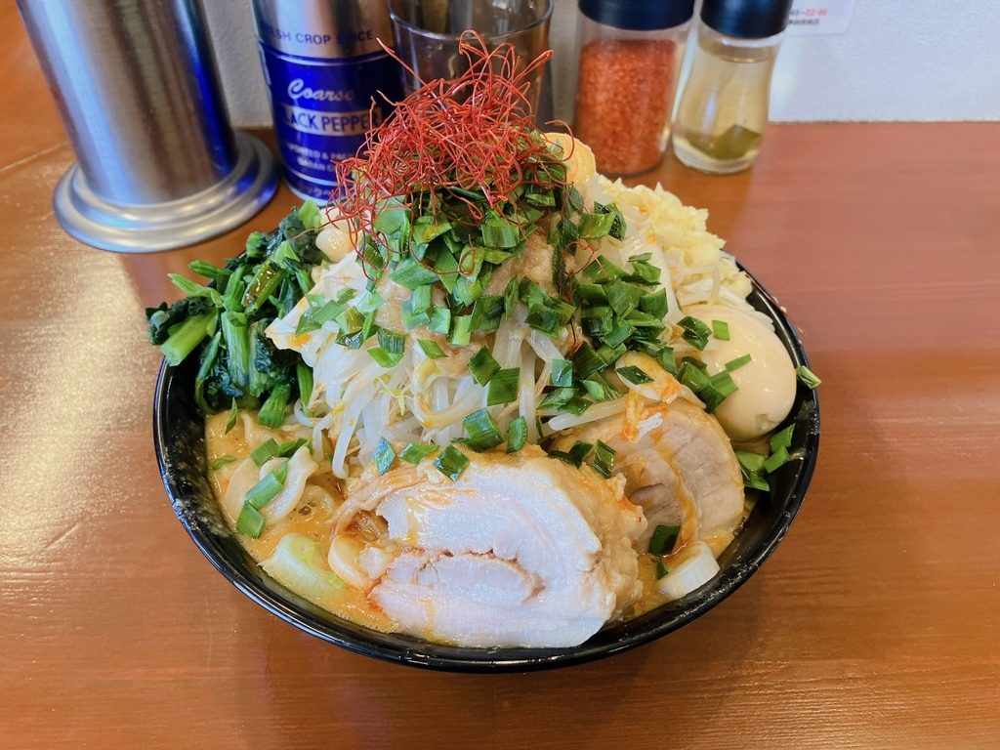
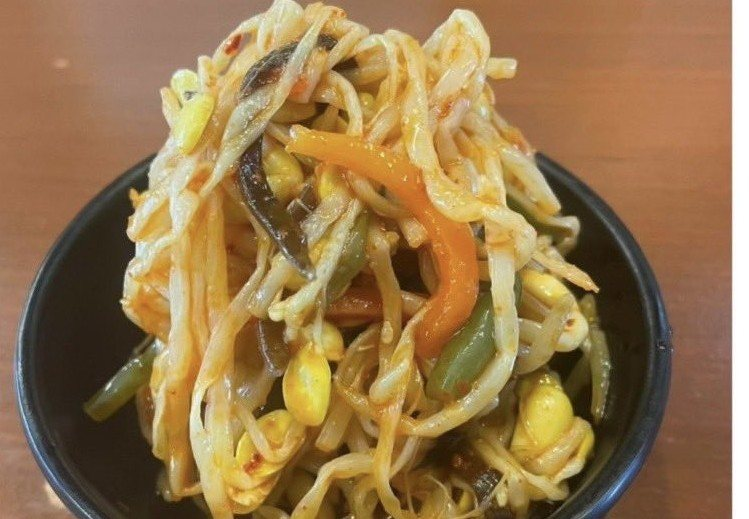
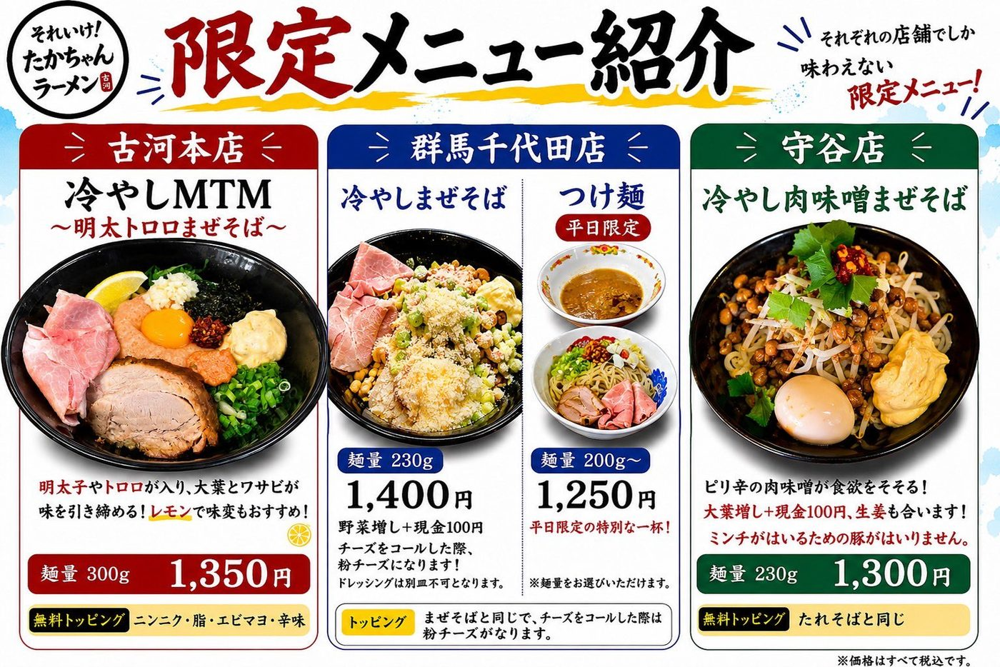

当店は券売機での食券制です。お求めいただいた食券をお席でお渡しになるときに、無料でのせられるものをお申し付けください。
お値段はすべて税込で、お支払いは現金のみです。麺類は中学生以上のお客様お一人様につきお一つお願いしております（小学生以下のお子様はその限りではございませんので、ご家族でお分けになってお召し上がりください）。限定のお品は入れ替わりますので、最新のご案内はXをご覧ください。
お値段はすべて税込で、お支払いは現金のみです。麺類は中学生以上のお客様お一人様につきお一つお願いしております（小学生以下のお子様はその限りではございませんので、ご家族でお分けになってお召し上がりください）。限定のお品は入れ替わりますので、最新のご案内はXをご覧ください。










